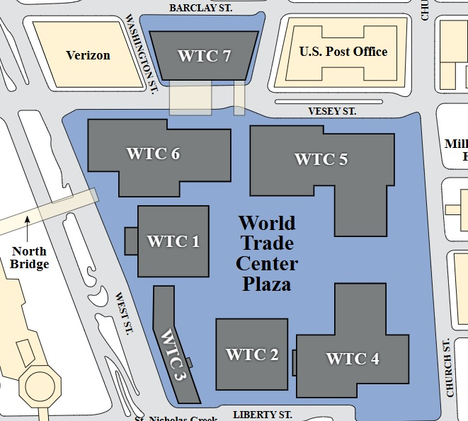
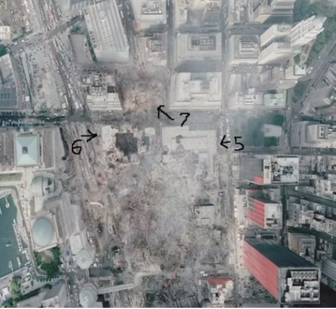
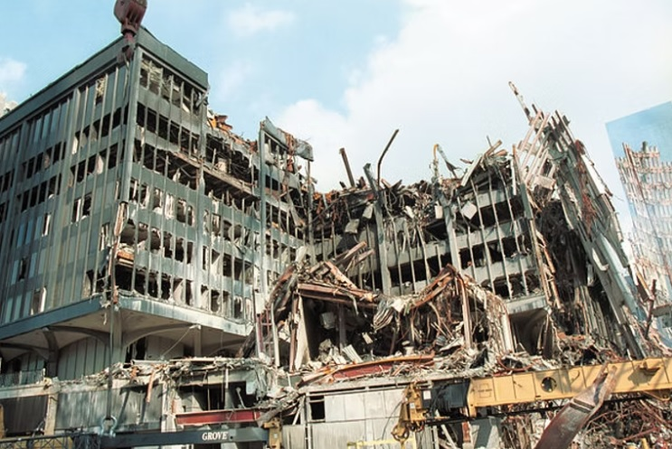
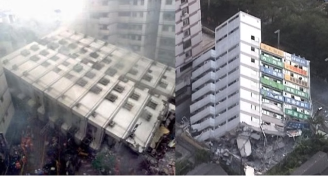
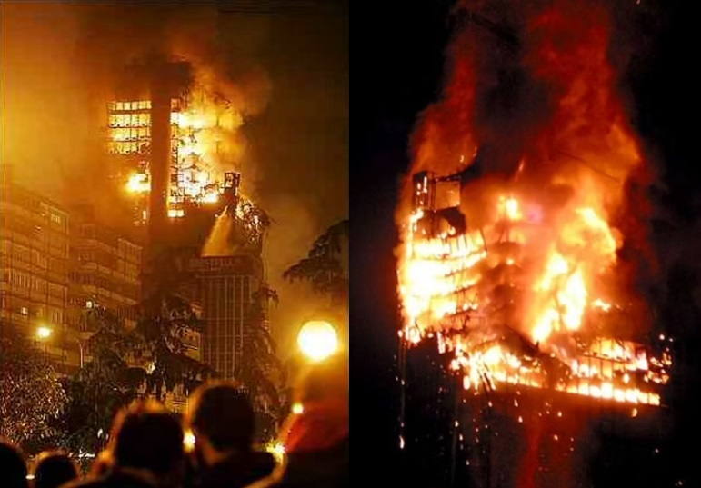
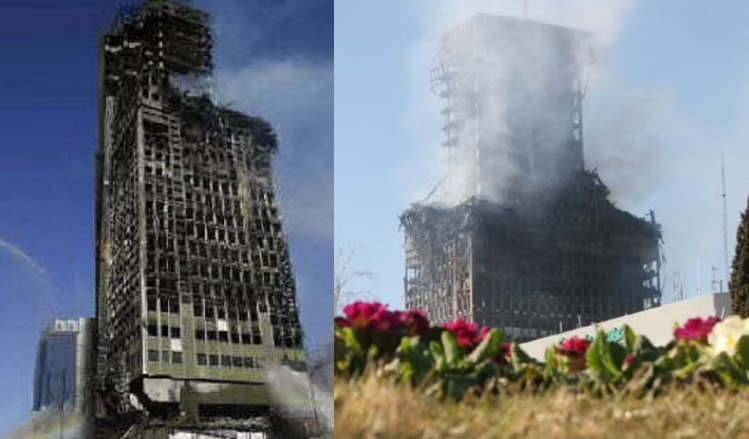
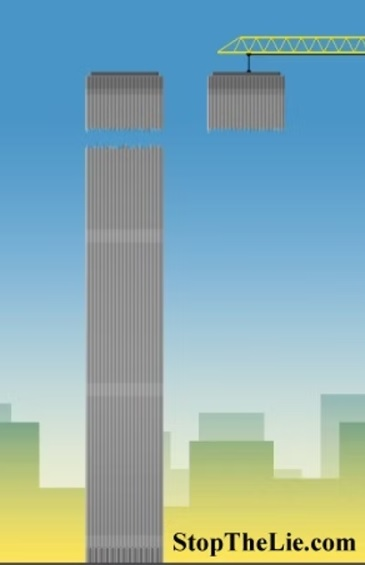

1-Hour Guide to 9/11
Note: This essay was written between November 2005 and September 2006. New evidence has strengthened some of the original arguments and, as such, I've provided some updates throughout. If you're in a hurry, I recommend you read Part 1 and Part 4.
Part 1 - No Tinfoil Hat Required
For many years now, the mainstream media has played a key role in maintaining the government's official account of 9/11. In all respects, it has done a brilliant job of filtering out everything that might undermine the government's claims, while simultaneously demonizing anyone who dares to challenge those claims.
So let's get right to it: Is it really baseless idiocy that drives people to question the official account of 9/11? Are the millions of Americans (including Senators, FBI agents, Doctors, Lawyers, Professors, Scientists, Engineers, etc.) all paranoid loons for suggesting we need a truly independent investigation of 9/11? The government and media would have you think so. They'd also (to help maintain that perception) need to keep you diverted from the information you're about to read.
The truth is, for decades our government has been doing very nasty things that most Americans would never believe to be true. The truth is, the media has fed you a steady diet of meaningless news stories instead of sharing information that is vitally important to the future of this country. The truth is, if it wasn't for the internet (which the media is now demonizing and the government is trying to get control of) most of us would have never known how badly our leaders have lied to us.
Let's start with the main assertion:
"It is crazy to think corrupt elements within our government intentionally LET the attacks on 9/11 happen so they could be used as a pretext for war. Furthermore, it is even crazier to suggest corrupt elements might have actually facilitated the attacks."
Now to be fair, I will admit it is utterly insane to intentionally provoke and allow an attack against one's own country. I agree it is even more insane (and criminal) to facilitate such an attack; sacrificing innocent human beings so the "outrage" could be used as a pretext for an already-established military agenda. ...Psychotic tyrants in other countries might resort to this type of "false flag" operation, but would our own government ever conspire to do the same? The answer might surprise you.
A hypothetical scenario:
Imagine if the President of the United States came on television and announced that Iraq had shot down a civilian airliner filled with American students on vacation. Imagine if there were no survivors, only grieving parents who had lost their children at the hands of a crazed and arrogant dictator. Imagine if all that remained of the plane and its crew was the frantic tape of its pilot's final transmission: "Mayday, Mayday, we are being tailed by an Iraqi Fighter...we need help up here and fast...mayday, do you copy..." and then the sound of an explosion, screaming, then silence.
Now, imagine in the midst of the "outrage" and calls for Saddam's head on a platter, some "idiot conspiracy theorist" stood up and said:
"It's all a lie! Iraq is innocent of the charges against it!!! Our government was behind the whole thing! They loaded a civilian airliner with FAKE passengers, flew the plane to a secret location, unloaded the fake passengers and replaced the original plane with a remote-controlled drone that was painted up to look like the original. They then had a FAKE Iraqi Fighter Jet (it was really an American Fighter painted to LOOK LIKE an Iraqi Fighter) chase after the remote controlled drone. Then, they transmitted a FAKE "Mayday" signal from the drone just before blowing it up! It was all a set up so we could frame and attack Iraq!"
In the above hypothetical scenario, who would you be more likely to believe? The president (with the media backing him up) or the "crazy conspiracy theorist?"
Well, substitute "Iraq and Saddam" for "Cuba and Castro" and you've got The Northwood's Document. The Northwood's Document is an official United States government plan to provoke and allow attacks to be used as a pretext for invading Cuba. The plan goes further to suggest, if provocation does not work, we could "attack ourselves" and blame Cuba. It even speaks of completely fabricating an attack to be used as a pretext. President Kennedy rejected the plan just prior to being assassinated. Had he not, this plan would have led to war and the death of many thousands based on total lies. Even worse, it might have led to a nuclear exchange with Russia: millions dead, based on lies.
Here are some of the highlights from this now declassified document. I have "bolded" some words to add emphasis.
"Subject: Justification for US Military Intervention in Cuba"
"As requested by Chief of Operations, Cuba Project, the Joint Chiefs of Staff are to indicate brief but precise description of pretexts which they consider would provide justification for US military intervention in Cuba."
"It is recognized that any action which becomes pretext for US military intervention in Cuba will lead to a political decision which then would lead to military action."
"It is possible to create an incident which will demonstrate convincingly that a Cuban aircraft has attacked and shot down a chartered civil airliner enroute from the United States to Jamaica, Guatemala, Panama, or Venezuela. The destination would be chosen only to cause the flight plan route to cross Cuba. The passengers could be a group of college students off on a holiday or any grouping of persons with a common interest to support chartering a non-scheduled flight.
a. An aircraft at Eglin Air Force Base would be painted and numbered as an exact duplicate for a civil registered aircraft belonging to a CIA proprietary organization in the Miami area. At a designated time, the duplicate would be substituted for the actual civil aircraft and would be loaded with selected passengers, all boarded under carefully prepared aliases. The actual registered aircraft would be converted to a drone.
b. Take off times of the drone aircraft and the actual aircraft will be scheduled to allow a rendezvous south of Florida. From the rendezvous point the passenger-carrying aircraft will descend to minimum altitude and go directly into an auxiliary field at Eglin Air Force Base where arrangements will have been made to evacuate the passengers and return the aircraft to its original status. The drone aircraft meanwhile will continue to fly the filed flight plan. When over Cuba the drone will being transmitting on the international distress frequency a "May Day" message stating he is under attack by Cuban MIG aircraft. The transmission will be interrupted by destruction of the aircraft which will be triggered by radio signal. This will allow ICAO radio stations in the Western Hemisphere to tell the US what has happened to the aircraft instead of the US trying to "sell" the incident."
Other ideas suggested:
"We could blow up a US ship in Guantanamo Bay and blame Cuba."
"Casualty lists in US newspapers would cause a helpful wave of national indignation."
"We could develop a Communist Cuban Terror Campaign in the Miami area, in other Florida cities and even in Washington. The terror campaign could be pointed at Cuban Refugees seeking haven in the United States."
"We could sink a boatload of Cubans enroute to Florida (real or simulated). We could foster attempts on lives of Cuban refugees in the United States even to the extent of wounding in instances to be widely publicized. Exploding a few plastic bombs in carefully chosen spots, the arrest of Cuban agents and the release of prepared documents substantiating Cuban involvement also would be helpful in projecting the idea of an irresponsible government."
The Northwoods document (available at the National Security Archive) proves beyond any shadow of doubt that our government has openly conspired to completely MANUFACTURE a pretext for war. It also gives us an idea of how far the ruling elite are willing to go in order to deceive the American people--how far they are willing to go in order to get what they want.
Now, does this prove corrupt elements in our own government were in some way responsible for the attacks of 9/11? No, but it does irrefutably establish that it's NOT crazy to suggest it's possible. As a matter of fact, it proves a person must be ill-informed, delusional, or simply lying to suggest it isn't possible.
- See also: PatriotsQuestion911.com for a list Senior Military, Law Enforcement, and Government Officials; Engineers, Architects, Pilots and Professors, 911 Survivors and Family Members, all calling for a new investigation based on the currently available evidence of a cover up.)
- Watch Dr. Steve R. Pieczenik, a man who held numerous different influential positions under three different Presidents and still works with the Defense Department, says that he is prepared to testify in front of a grand jury that a top general told him directly that 9/11 was a false flag operation.
Part 2 - The Reason They Lie
Knowing full well that it isn't crazy to suggest complicity or cover up, why does the government try so hard to convince us otherwise?
Well, does it make sense that we should expect criminals running covert operations to "educate us" about the existence and history of such operations? Of course not. The whole point of a covert / "false flag" operation is to deceive. The whole point is to get away with something you would otherwise be unable to get away with. Deception (also known as lying) is the foundation on which these operations are built. Their first objective is to create and maintain cover.
Take a minute to look up "disinformation" or "psychological operation" or "false flag." These aren't just terms, they are real weapons used to achieve covert objectives. If there is anything you can be sure of, it's this: These weapons are well known to the ruling elite, they've been used for thousands of years, and they will continue to be used whenever it is believed the "targets" of the operation will respond appropriately. Simply stated, to the extent we blindly follow our "leaders," we encourage them to deceive and exploit us.
In case after case, if we dig even a little bit, we find that nearly everything our government denounces PUBLICLY, it engages in privately. And I do mean everything. From overthrowing democratically elected governments (and installing ruthless dictatorships in their place), to training death squads to kill innocent civilians. From allowing American citizens to be infected with syphilis (so the effects and spread of the disease could be studied in a "real world" laboratory), to KNOWINGLY contaminating civilian and military personnel with depleted uranium.
Deception, theft, torture, murder, terrorism - These are the tools of tyrants, not the tools of a legitimate American Government. If we intend to reclaim our title as the home of freedom and justice in the world, we can no longer allow ourselves to be manipulated by the lowest among us. And the truth is, if these crimes are sufficiently exposed, they won't be tolerated. Our false perception of the "benevolent state" has provided the cover for the wickedness it does. But when that cover is lifted and people see the truth with their own eyes, the illusion of legitimacy melts away. For all but the most cowardly and intellectually dishonest, continued self deception becomes impossible.
Assume for a moment that all of the allegations of wrong doing made to this point can be easily verified and are 100% true. (Unfortunately, they can be verified and they are true.) If you are like most Americans, you probably know very little (if anything) about these conspiracies. There are at least two reasons why. We've already covered the first, which is:
- We can't expect those trying to hide what they're doing to tell us what they're doing. As important as it is for you to know what they're up to, it is equally important, to them, for you to remain ignorant. They are willing to do whatever it takes to get what they want, lying is no exception, and there is little we can do about that.
However, we have complete control over the second cause of our ignorance:
- We are ignorant of our government's greatest lies because we choose to be. We choose to believe the comforting words of our elected officials when they say: "There is nothing to see here, it's all a conspiracy theory, it is absurd to suggest we'd ever participate in such a thing, trust us."
Trust them based on what? Have they earned our trust? Or have they violated it over and over again? Is it really absurd to suspect them of heinous crimes when we've repeatedly caught them red-handed? -And how exactly can we expect to expose any of their crimes (great or small) if simply denying the charge and attacking their accuser is considered sufficient grounds for acquittal? We know the elite lie, we know they can be sadistic, we know they'll stop at nothing to secure and expand their power. If that isn't enough to warrant healthy skepticism, what is?
The history of unchecked power is clear; its tyrannical course, unavoidable. Over and over we have seen the maxim "absolute power corrupts absolutely" played out before us. Personally, I believe those who seek absolute power are already corrupt, but there's no need to split hairs; in the end the same holds true: It is never absurd to question the statements, motives, or actions, of extremely powerful people. To the contrary, all evidence suggests it is absurd not to.
Common criminals plague our society, but whatever threat they pose, it pales in comparison to the "threat" of those who rule over us.
Common criminals do not have access to the media, the trust of the masses, or the air of legitimacy given those who secure a high position in government. They cannot legally seize our money; destroy the purchasing power of our currency or command standing armies. They cannot "legislate away" our rights, or (by their reckless spending) reduce our children to debt slaves. They cannot obstruct investigations from inside the system. They cannot seal documents, confiscate video tapes or appoint their own investigators. They cannot subpoena witnesses, find out what the witnesses know, and then use the information they've obtained to more effectively whitewash their crime. They cannot have BILLIONS of dollars in cash sent into the desert, have it disappear without a trace, and have nobody bat an eye. They cannot orchestrate covert operations that drag us into war. They cannot commission our agencies to carry out atrocities around the world on "our behalf" - destroying America's reputation, undermining its future security, and setting the stage for other great powers to unite against us.
If we do not regain control of this country, we will lose what remains of it. In order to do that, we must know exactly what we're dealing with - no illusions.
John Adams Wrote: "Liberty cannot be preserved without a general knowledge among the people, who have a right ...to that most dreaded and envied kind of knowledge, I mean the characters and conduct of their rulers."
When speaking of our freedoms, Samuel Adams warned: Let us not be "cheated out of them by the artifices of false and designing men."
Frederic Douglas wrote: "Find out just what the people will submit to and you have found out the exact amount of injustice and wrong which will be imposed upon them; -the limits of tyrants are prescribed by the endurance of those whom they oppress."
The United States is like the Titanic - steaming headlong into an Iceberg. Sure, I know; you've got a lot invested in your ticket, the drinks are good and the shows are even better. The food is fantastic, the gambling exciting, and there are tons of fun things to do. Who wants to talk about that stupid iceberg anyway? Who wants to do what it takes to turn the ship around or at least plan an evasive maneuver? "Nobody here, we're having too good a time!" ...OK, but ignore the ice at your own peril. Know that those who intend to sink this ship will NOT go down with her. As a matter of fact they stand to profit handsomely. They will speed off in their lifeboats, unite with the billions of dollars lost in the desert, and YOU will be left treading water. But not to worry; an even larger "global government" will come to your aid. That is the ultimate plan; bring America to its knees economically, erase the borders, and absorb it into a "New World Order." Oh, but that is a whole other topic.
For now, suffice to say, we've got some real tough choices ahead. Hopefully you've seen enough by now to realize (if you didn't already know) what we're dealing with. Hopefully you've seen enough to agree, if there is compelling evidence that counters the official account of 9/11, well it just might be something we should take a look at. After all, those darned government guys might be fibbing just a little bit...they do that sometimes.
Part 3 - The Cover Up
We can now rest our case on whether or not it's "crazy" to question the government's official account of 9/11. Corrupt elements within our government have proven they are capable of carrying out, facilitating or covering up crimes of equal or greater depravity - this is indisputable.
However, to support a specific charge (a charge of cover up or complicity) we'll need to go further with the evidence. That is what the remainder of this essay will focus on. Specifically, it will focus on evidence that points to a "cover up" because a cover up, once proven, will establish complicity.
Consider what follows similar to a grand jury investigation. Our first job is to decide whether there's reasonable cause to believe a cover up has taken place. If the evidence reveals reasonable cause, it is then our job to indict. Unlike the government's "investigation" into 9/11, ours will be truly independent. We will not allow the suspects to choose the detectives, limit the parameters of our inquiry, block access to damning information, lie by omission, etc.
We are not only demanding answers, we are demanding answers that can survive reasonable scrutiny. Because the government's claims regarding 9/11 (up until now) cannot survive reasonable scrutiny, they must be rejected in favor of answers that can.
There are perhaps 100 separate pieces of compelling evidence that clearly undermine the official government account of 9/11. But there is no reason for us to address them all here. For our purposes we need only ONE solid argument - one argument that shows, beyond a reasonable doubt, that what we've been told is a lie. In a nutshell, this is it:
The 3 buildings that collapsed in New York on September 11, 2001 (the north tower, the south tower, and world trade center building #7) were brought down by explosives. The evidence to support this claim is irrefutable. It can be physically observed and re-created. It can be mathematically proven, and independently verified via eyewitness accounts. The evidence to support the government's claim that fire destroyed all three buildings has no basis in reality - the "evidence" exists only in the form of words. There is no historical data to back their assertions, rather, all historical data disproves them. No models have been able to physically reproduce the phenomena they describe because (as expected) the laws of physics cannot be violated. The government's refusal to first investigate and disprove the most logical cause for the collapse of the buildings (explosives) is, in itself, highly suspect.
Analogy:
Suppose a man is found dead in his home. His house has been ransacked, two computers are missing, and there are signs he was tortured. His body is laying face down, his hands and feet are tied, and there are three gunshot wounds to the back of his head. Does it require a degree in forensic science to conclude foul play? If you are an outsider looking in on this investigation, would you be suspicious if this man's death was officially ruled a suicide? Would you say such a ruling was able to survive "reasonable scrutiny?" And what if after ruling the death a suicide, the man's home mysteriously caught fire (electrical problem) and his body was accidentally sent to the crematorium where it was promptly incinerated...Would you expect a cover up? Let's hope so.
Now back up a minute. What if the only information you had access to was the official account? What if the available information regarding this mans death consisted solely of the following: "Detective Johnson arrived on the scene where he found John Doe dead from a self inflicted gun shot wound. Investigators found a suicide note apologizing to his friends and family. Bouts with depression over the loss of his job and a recent divorce were cited as the most likely cause for his decision."
What if this is all the information you had access to? Isn't it reasonable to assume you'd never think twice about it? Of course; and that is how the perfect cover up is supposed to work. -Sure there might be quiet rumblings of a conspiracy - secret ties to the CIA and a covert drug running operation gone bad. But with the crime scene destroyed, and the body cremated, good luck proving it.
The official account of 9/11 is a cover up - plain and simple. For the sake of argument, we'll define a cover up as "a false story created to conceal the real story." For any cover up to succeed, the false story must be protected from information that undermines it. If the conspirators are unable to do this, the cover up falls apart.
Although all cover ups begin with a false story, there are other elements that play a supporting role: the destruction of physical evidence, creating distractions to control people's attention, vilifying those who level accusations, etc. These supporting elements (in conjunction with the false story) serve one goal: they keep you from seeing or considering anything that might reveal the truth.
- Destroy evidence: If it doesn't exist, it can't be examined
- Create distractions: (Here are a couple common tactics)
- The "false debate" distraction: False debates are very useful because they lend credibility to the lie while distracting people away from questions that would expose it. Take our "suicide" story above. If people can be manipulated into a heated argument over "why" Bob killed himself, (because his boss fired him just a week before Christmas, because his heartless wife left him a week later, because he had a secret drug problem, etc.) the issue of whether or not Bob actually did kill himself gets lost.
In effect, the false debate turns the lie into an established truth - a foundation on which the subsequent debate is built. (Clearly, two people cannot argue about why Bob killed himself without first accepting the "fact" that he did kill himself.) As they become increasingly sure of their position, they become increasingly dependent on the lie that supports it. Regardless of which side of the debate they're on, they will unite in protecting the false assumption on which their whole argument rests. In an odd way, defending the lie becomes an act of self-defense from that point forward.
-It goes without saying that once one "false debate" has been established; other "false debates" can grow up around it. In very little time, the masses can become hopelessly tangled in a web of falsities - endless arguments without merit. When this happens, only strong evidence can destroy the illusion - evidence that turns their attention back to the legitimate starting point; killing all descendents of the original lie. - The "major crisis" distraction: The power of a "major crisis" to manipulate the masses is well known among the ruling elite. Whether the crisis is intentionally created or naturally occurring, nothing enables them to more effectively expand power and direct the consciousness of their subjects. -To silence dissent, monopolize media talking points, rationalize the irrational, or completely bury an unwanted topic, nothing beats a crisis. (Especially when that "crisis" is war.)
- The "false debate" distraction: False debates are very useful because they lend credibility to the lie while distracting people away from questions that would expose it. Take our "suicide" story above. If people can be manipulated into a heated argument over "why" Bob killed himself, (because his boss fired him just a week before Christmas, because his heartless wife left him a week later, because he had a secret drug problem, etc.) the issue of whether or not Bob actually did kill himself gets lost.
- Attack the messenger: If evidence cannot be destroyed, false debates aren't sufficient, or the crisis can't shake off growing dissent, the one remaining option to keep people from contemplating the evidence is to attack the messenger. When this is done, the conspirators' assertion is obvious: "What this person claims is absurd and any evidence he presents isn't credible."
Now ask yourself an obvious question: Why would it be necessary to vilify a person making "absurd claims" backed with "no credible evidence?" Isn't that something reasonably intelligent people could determine by looking at the evidence themselves? Do we really need (or want) others to decide for us what we should and shouldn't take into consideration? -In a "free" and "democratic society?" I don't think so.
The preceding three installments of this "1-Hour Guide" have been an attempt to expose the mechanics of how the government (with the help of the media) manipulates us into believing things that simply aren't true. For instance, the Northwoods Document proves our government would openly conspire to stand by and let our country be attacked, so long as the carnage helped them further their military agenda. Worse, it proves they'd go so far as to completely manufacture an attack if they couldn't bait the target country into attacking us first. This is not a "conspiracy theory" it is a "conspiracy fact." -And yet the average American still believes it's crazy to think such things are possible.
Is it an accident that everyone knows about Janet Jackson's "wardrobe malfunction" but nobody has heard of the Northwoods document? -how about the real story behind the USS Maine, the Lusitania, the Gulf of Tonkin, the USS Liberty or (what we're discussing now) the NeoCons' "New Pearl Harbor?"
Either we condone the exploitation of our country or we don't. Either we support the acts of liars, thieves, murderers and aspiring tyrants or we don't. This is our country, not theirs. LOOK at the evidence, decide what it means and determine once and for all where you stand.
Here are just a couple clips that cover the evidence of "controlled demolition." Both are very well done - the evidence speaks for itself. The first clip (bombs.wmv) is about 5 minutes long and comes from the "Loose Change" documentary. The second clip is nearly an hour long and it comes from the Alex Jones documentary "911 - Rise of the Police State."
- Clip 1 From "Loose Change" Bombs.wmv
- Clip 2 From "Rise of the Police State" (50 minutes - 87 meg file) Click Here
- UPDATE, the video below is a compilation of eyewitness testimony referencing explosions on 911
9/11 Explosives - Eyewitness Testimony
Part 4 - The Evidence
"Pools of Molten Metal"
It is not easy to "melt" structural steel. (Keep in mind, we're not talking about the temperature at which steel weakens and loses its structural integrity, we're talking about the temperature at which it is literally reduced to a liquid / molten state.)
To date, nobody has suggested the fires on 9/11 reached the required 2,800 degrees Fahrenheit (1,539 Celsius) needed to produce molten steel. Why? Because just as structural steel has a "maximum temperature" it can withstand before turning liquid, a typical building fire has "maximum temperatures" it is capable of producing. NONE of the known fuel sources burning in the buildings on 9/11 could have reached the required threshold.
As a matter of fact, the widely touted culprit of 9/11 (jet fuel) has a maximum burn temperature far lower than what is required to liquify steel. Jet Fuel's maximum burn temperature is less than 1,700 degrees Fahrenheit. The other fuel sources (desks, carpet, paper, etc.), could have reached temperatures of up to 2,000 degrees Fahrenheit under ideal conditions. -Closer, but still nowhere near hot enough to create the widely reported "pools of molten steel."
Because it is impossible for temperatures less than the melting point of steel to liquify steel, we may reasonably conclude the following:
- Something that "burns" much hotter than jet fuel, diesel fuel, desks, carpet, paper and other building materials must have been present and active in the WTC buildings; otherwise, there would have been no molten steel / iron. ***Note: Physical samples of the (previously) molten iron have been retrieved from the WTC wreckage; the jury is no longer "out" on whether or not it existed.
- Whatever was hot enough to create the molten iron was also hot enough to cut through the massive steel support columns.
- By deliberately ignoring this "smoking gun" physical evidence, the official account is a demonstrable fraud.
(Intro to "Fire Initiated Collapse - Primary Arguments Against")
There are a few things we need to point out regarding the alleged "fire initiated collapse" of (3) steel framed buildings on 9/11.
First we need to make clear there were in fact THREE buildings that collapsed. Many people are only aware of the two towers. The likely reason for this is the third building, WTC 7, has been completely ignored by the media.
Second we need to establish that nothing short of controlled demolition has ever brought down a steel framed building in the manner we witnessed on 9/11. Never, not once, not even close. This of course includes fire, earthquakes, wind, poor construction, etc.
Last but not least, we need to address the fact the government's theory regarding what caused the buildings to collapse is just that: a theory. By no stretch of the imagination has the theory ever been proven and, given the ever growing body of evidence against it, one could more accurately argue the government's theory has been thoroughly demolished. (No pun intended.)
The Third Building; WTC 7 (World Trade Center Building #7)
The collapse of WTC 7 was spectacular. -Some would argue the catastrophic failure of this 47 story steel framed building was even MORE spectacular than the collapse of the two towers. The reason for making this claim is, unlike the two towers, WTC 7 was not struck by any planes or burned with any jet fuel. And yet, in a "spectacular" fashion, it suddenly vaporized into its own footprint for no apparent reason. Here are a couple excellent videos of the collapse: Video 1 Video 2 UPDATE, new video added in 2009: Video 3
When it comes to proving the government's "raging inferno of jet fuel" theory is critically flawed, WTC 7 represents one of the most compelling pieces of evidence available. Still, our "free press" (which is supposed to help protect our society from the tyranny of secretive, inept, and dishonest government) has acted like the collapse of WTC 7 never happened. Rather than provide the 24 / 7 coverage this smoking gun deserves, we've instead been treated to 24 / 7 silence.
Without getting too far into the issue of "media complicity" in the cover up surrounding 9/11, suffice to say our multi-billion dollar corporate media is a "for profit" operation. There is no incentive to address any topic that could potentially destabilize the system it relies on; a system that provides (or can take away) favorable regulatory considerations, vital inside sources of information, and lucrative government contracts (just to name a few.)
Is there more to the media blackout? -Maybe; but there doesn't need to be. Good old fashioned profit motive and self-preservation are enough to stop the most important stories dead in their tracks. Both of these act as "filters" that sift every piece of information before it reaches our senses. The corporate media might skewer a lone government criminal here and there, thats for sure; but whether it would ever truly expose the criminal system on which it depends is another issue all together. The fact is, neither the media nor the government can be trusted to tell us what we really need to know.
Case in point, the independent commission which was established to provide "the fullest possible account of the events surrounding 9/11" dealt with the complicated WTC 7 issue by not dealing with it at all.
Yes, that is correct. You could have read the entire 568 page 9/11 commission report and not learned anything about the inexplicable collapse of a 47 story office tower. (As if there was no real need to bring up something so ordinary and uneventful.) Those who expected answers that would provide the "fullest possible account" got nothing instead.
But here again, with the same filters in place, what do we expect? Please forgive me for repeating myself: "...skewering a lone government criminal here and there is one thing, addressing anything that could potentially expose the criminal system (a system everyone in Washington profits from and depends on) is another issue all together."
To be fair, consider the underlying politics. Imagine if you worked decades to secure a high position at the most powerful company in the world, and the "leader" of that company selected you to get to the bottom of a problem. Would you, after careful consideration, go to your superior and say: "Well sir, based on the evidence, it looks like you're the problem - worse, there is reasonable cause to believe you and others under your command might be guilty of crimes punishable by death."
The term "career suicide" comes to mind (if not literal suicide by way of some unfortunate accident.)
How many of us would risk our life's work to do something guaranteed to draw deadly serious attacks from the highest levels of power, but offered no guarantee of rewards in return? (Consider this question seriously. How many of us would risk our reputation, our career, our current income, our future income-or worse?) Granted, some people would, but the way around that little problem is to make sure that kind of person isn't selected for the job. -Independent investigations don't mean much when the prime suspects get to choose the people setting the parameters of the investigation. On that point, it was said of Phillip D. Zelikow (the 911 Commission's executive director:)
"Zelikow picks the areas of investigation, the briefing materials, the topics for hearings, the witnesses, and the lines of questioning for witnesses. In effect, he sets the agenda and runs the investigation."
How can we truly expect an investigation to yield the "truth" (let alone justice) when one hand-picked person can steer attention away from the most incriminating evidence? How can we uncover criminal negligence (or worse) when everything that points in that direction is excluded and deemed irrelevant?
Perhaps The Commission wasn't meant to provide the "fullest possible account" after all. It seems more likely it was intended to prop up the official conspiracy theory. It seems information that undermined the official account was only collected so it could be more effectively suppressed, countered and whitewashed. This is especially true when it comes to the issue of "intelligence failures" but that is beyond the scope of our discussion here. For now, consider the following:
- A mountain of evidence that pointed to the use of explosives in the attacks (including but not limited to eyewitness accounts of police and firefighters on the scene) was ignored by the Commission.
- Compelling video evidence, not the least of which includes an "on camera" statement by Larry Silverstein that building 7 was "pulled," was ignored. (Is this evidence he knew the building was going to collapse? Evidence that it was intentionally destroyed? Did you know the collapse of WTC7 was reported in the news over 20 minutes BEFORE the building actually collapsed? (Video Here)
- After the government failed to suppress the firefighters radio transmissions to one another; transmissions that reported bombs going off in the buildings and fires that were far from raging; the newly available radio transmissions were, you guessed it, ignored. (Sample Audio 1) (Sample Audio 2)
- Video Added 12/2008: Deputy Director of Emergency Services Department, (NY City Housing Authority) Barry Jennings discusses explosions in WTC 7. Please note, Barry makes it clear that BOTH towers were standing when the bombs went off in WTC 7. (UPDATE: I originally included an embedded video below, but on 11/11/2012 YouTube blocked that video. You can still download the actual .wmv file here)
- UPDATE: 11/12/2012 YouTube blocked the original video of Barry Jennings' testimony posted here in December of 2008. See the embedded video below for more info.
Barry Jennings Describes "Explosions" in WTC7
- Added 5/2011: Top US government insider Dr. Steve R. Pieczenik, a man who held numerous influential positions under three different Presidents and still works with the Defense Department, is prepared to testify in front of a grand jury that a top general told him directly that 9/11 was a false flag operation / inside job. (Video Here)
Remember, for a cover up to succeed, information that exposes the lie must be kept hidden. So, if during the course of an "investigation" those charged with getting to the bottom of things are openly destroying evidence, distracting attention away from obvious inconsistencies and suppressing information that paints a more convincing account of the facts; the LAST thing we should do is accept what they offer without question. -Since those in charge of explaining the events of 9/11 are clearly guilty on all counts, scrutiny of their claims is only logical.
For a detailed list of what was left out of the "independent" 9/11 Commission Report, pick up a copy of David Ray Griffin's book: The 911 commission - omissions and distortions. Rest assured, every aspect of how 9/11 was handled has something seriously wrong with it - the Commissions "investigation" is no exception.
Fire Initiated Collapse - Primary arguments against
Presenting an uncluttered account of 9/11 inconsistencies is no easy task. The official account is so haphazard and full of holes, it's very hard to stay focused on one problem without being diverted into a string of related problems. With that in mind, try to forgive the following "rapid fire" outline:
We've got the "raging jet fuel theory" which (even if true) could have never generated sufficient heat to produce the molten metal found in all three buildings. In a logical world, we can't even begin discussing what caused the collapse of the buildings until we've identified what burned hot enough to create the molten iron. Why? Because whatever burned hot enough to create the molten iron is (logically) the most likely cause of collapse!
Another problem with the jet fuel theory (as we've already pointed out) is WTC 7 wasn't struck by a plane or burned with jet fuel. Since it must be assumed something else destroyed WTC 7, it's reasonable to assume something else could have destroyed the North and South towers as well.
To date, FEMA has only been able to come up with a "Diesel Fuel Theory" for building 7. Check the maximum burn temperature for diesel fuel and you'll run into the same problem we ran into with the two towers; it is no where near sufficient to cause the molten metal found at the site. Furthermore, when addressing how diesel fuel might have contributed to the collapse of WTC 7, FEMA is on the record as saying: "the best hypothesis has only a low probability of occurrence. Further research, investigation, and analysis are needed to resolve this issue." The attacks took place in 2001. How many more years will it take?
*Reminder: This article was written 2005-2006. NIST finally came up with a theory for WTC7. It can be countered in three sentences: There were approximately 80 columns supporting WTC7. For WTC7 to achieve free-fall acceleration, ALL vertical resistance from those columns had to be removed. "Buckling" of one column, column #79, doesn't even come close to explaining the observed collapse.
Now is a good time for a logical question: How long would it take FEMA to "resolve the issue" of what caused building 7 to collapse if they were allowed to consider explosives in the building? I'm betting they could have a universally accepted, reproducible theory in a day. From there it would only be a matter of figuring out how the explosives got into the building. (...gotta be easier than trying to figure out how to bend the laws of physics.)
Another "theory" that has recently been put forward is debris from the North Tower cut into Building 7; knocking out a handful of supports on its south side. This theory also has multiple problems. First, there is no good evidence to support it. Second, the North Tower literally fell on top of building 6, crushing a GIANT round hole out of the center of the building. Despite having a huge chunk ripped from its core, the sections that weren't crushed remained standing and had to be brought down with explosives.
Update: Some have objected by saying that WTC6 was only about 100 feet tall, had less weight to support, and that's why it was able to lose the majority of its load bearing columns without collapsing in on itself, while WTC7 (a much larger, stronger, and less-damaged building) crumbled from allegedly losing ONE column. Needless to say, this isn't a valid argument. Buildings are engineered to withstand the loads of their specific design. The number of TONS supported by a larger building's columns might be higher, but the actual load on those columns (as a percentage of their rated capacity) is not.
Diagram of WTC complex: Note in this picture 1 WTC (The North Tower) is almost directly against building 6 (6 WTC) whereas building 7 (7 WTC) is the farthest building away from both the North and South towers.
Here is a picture of Building 6 after having the North Tower fall directly on it. (Note the giant hole in the center of building 6. Also highlighted: Building 5 and the area where building 7 used to be.)
Third, and most importantly, IF the suggested damage to building 7 actually existed (scant evidence to support the assertion) and if it were sufficient to cause the damaged section to collapse, we would have seen a partial collapse in the area of the damage; not a symmetrical vaporization straight down into the buildings own footprint.
Isn't it absurd to suggest that a "few key columns on the south side of building 7 might have been scooped out by falling debris, causing it to collapse" when in fact we can all see that building 5 suffered exactly that kind of damage to its south side and yet didn't collapse? Or, how about this: I wonder if some "key columns" might be missing from building 6...Here is a look at what was left from ground level:
The truth, as evidenced by the pictures above (not to mention all known history) is steel framed buildings don't up and evaporate; even if you rip huge chunks out of them. A catastrophic failure does not a "global collapse" make. As a reference, compare these two buildings below (snapped off at the base in an earthquake) to what was left of WTC 7.
And now, here is the picture of what was left of WTC 7 (Click Here.) (Note: The two buildings above fell sideways with nothing but air standing between them and the ground, they impacted on their sides which is not their strongest angle structurally and yet they didn't disintegrate into a fine powder. Why?) Forgive the cliche', but there is "something wrong with this picture." (UPDATE: Here's some video of a couple "demos" gone wrong.)
While we're pointing out the obvious, how about an obvious yet unasked question: Why weren't explosives the first thing considered as the cause for the WTC buildings' collapse? Terrorists regularly use bombs to attack their targets, countless reputable eyewitnesses reported bombs going off, buildings have never collapsed in the manner witnessed on 9/11 without the help of explosives, and in 1993 explosives were successfully placed (by terrorists) and detonated in one of the same buildings that fell on 9/11! To have the government bend itself into an intellectual pretzel to make their "fire initiated collapse" theory stick (without spending any time looking into the more plausible theory) makes no sense whatsoever.
There are a few more important things to consider:
Contrary to what the government would have you believe, all evidence points to relatively insignificant fires at the time of each building's collapse. Try to forget about the "jet fuel" that was endlessly drummed into your head; it means nothing. In the towers the jet fuel was irrelevant after 10 minutes (burned off) and in WTC7, it never existed. What we're dealing with are three high rise buildings that, according to the government, vaporized due to fire.
For the sake of argument; pretend there had never been a high-rise fire before in the history of mankind. If that was the case, the "fire initiated collapse" of all three buildings would be harder to disprove. Even so, it's likely that some in the scientific community would challenge the theory; let's proceed under that assumption.
Armed with a strong grasp of physics and knowledge of how heat affects steel, our scientific "debunkers" would have firmly rejected all three buildings disintegrated (at near free-fall speed) as a result of fire. To back their assertion, they would conduct a series of experiments where steel framed buildings were subjected to extremely hot "all-consuming fires" for hours on end. To be clear, the fires in these experiments would be intentionally stoked to maximum severity under ideal conditions; they would far surpass anything the WTC buildings had to endure.
What if, at the end of their testing, the results read: "no collapse was observed in any of the six experiments -despite the temperature of the steel beams reaching 1,500 - 1,700 degrees Fahrenheit in three of the tests-" Would anyone still accept the official account? Maybe some would still believe, but what if (for the first time in history) steel-framed buildings around the world suddenly started bursting into flames? Instead of scientific "mumbo jumbo" the masses would get to see the effects of these fires first hand. They witness:
- A fire in a Philadelphia high rise that rages for 18 hours, burning hot enough to break glass and gut 8 floors. Yet despite the severe conditions, a damage report concludes the steel support columns "continued to support their loads without obvious damage."
- They witness a Caracas high-rise fire, it burns for 17 hours and completely guts the upper 20 floors. The building remains standing.
- Finally, they witness a high-rise fire like no other in Madrid Spain. The building literally burns like a torch (a TRUE "Raging Inferno") destroying it from top to bottom. When all is said and done, it takes more than 22 hours to extinguish the flames, the building is irreparably damaged, but it remains standing.
Would this knock the legs out from under the government's theory? ...For all but the most dedicated followers, yes.
With that said, now would be a good time to reveal that each event I've just mentioned actually took place. From the scientific experiments to the individual building fires each is a legitimate historical fact. (Save the chronology and certain aspects of the context, there is nothing "hypothetical" about any of the aforementioned.)
Rather than take the time to go through each of the cited examples, lets contrast the 22 hour, all consuming Madrid Spain fire (Below) with the 56 minute, barely visible fire of the South Tower on 9/11. If you haven't seen pictures of the Madrid fire, have a good look:
The government has told us over and over again the South tower succumbed to the devastating heat of a raging inferno. But as is the case with nearly everything we've been told, the evidence strongly contradicts their claim. Nothing to evince a blaze even remotely comparable to the true inferno above.
First, we've got multiple eyewitness accounts (from within the building itself) that describe anything but an inferno. Perhaps the most compelling account is that of a firefighter who, transmitting from the impact floor of the South Tower, radioed the following: "we've got two isolated pockets of fire. We should be able to knock it down with two lines." If you didn't listen to it before, here is the audio. Moments after this transmission (with the fires at their lowest point) the South Tower collapsed.
Additionally, there is video and photographic evidence that proves the absence of a raging inferno. For instance, the thick black smoke seen pouring out of the South Tower prior to collapse suggests the fire was oxygen starved and on its way out.
Now, let's compare the extremely short lived and rather unimpressive "inferno" that allegedly vaporized the South Tower, to what the Windsor Building in Madrid Spain had to endure.
If ever a steel-framed building should have collapsed due to fire, the Windsor building was the perfect candidate. It had far less steel than the WTC buildings (limiting its ability to conduct / diffuse heat,) it had FAR MORE intense fires to deal with, and it burned much longer. Additionally, the "core" of the Windsor building was constructed of steel reinforced concrete; nowhere near as durable as the enormous solid steel support columns of the towers and building 7. And yet, despite all of these disadvantages, it displayed amazing resilience.
For the record, few in the scientific community doubt that it's theoretically possible for a building to experience failure if it is subjected to devastating heat for a sufficient period of time. And additional factors like no fire-proofing, no sprinkler systems, insufficient steel to "bleed off" heat or inferior construction greatly increase the possibility. However, what is "doubted" (or more accurately; considered downright impossible) is that such a failure would resemble anything like what was witnessed on 9/11. ...Gradual, isolated, asymmetrical failures spread out over time; perhaps. Nearly instantaneous disintegration of all load bearing columns (leaving a pile of neatly folded rubble a few stories high), no way.
If the Windsor building had been an experiment to debunk the "sudden and complete collapse" of the WTC buildings, it would have to be chalked up as a great success for demonstrating the following;
- The genuine difficulty of causing steel to fail in a building fire
- What a fire initiated failure actually looks like, and
- How less-affected sections "hold up" under falling debris and how the CORE reacts to collapsing floor spans
Pretending for a moment the inferno was intentionally created to cause an observable failure, the logical expectations would have been:
Slowly, individual sections of steel would lose their ability to "bleed off" the intense heat they were subjected to. As a result, their temperature would rise and their rated capacity to support weight would decrease; first by 10%, then 20%, 40% etc. By the time an individual supporting member had lost 70% of its rated capacity, it would begin to sag and twist. At around an 80% reduction that particular section would likely fail.
In the end, the overall expected failure scenario reads: A series of small partial collapses (isolated and occurring at different intervals over the course of the blaze) with the bulk of the building remaining intact. NOT expected (or believed possible): an instantaneous failure of all weight bearing columns resulting in a symmetrical free-fall collapse. And what were the results? See for yourself:
Of the approximately 10 separate partial failures, none of them had any effect on the core of the structure. This is amazing when you consider the severity of the blaze, the duration of the fire, and the inherent inferiority of its "reinforced concrete" construction. An excellent summary of the facts can be found here:
The Twin Towers and Building 7 were both 100% steel-framed, with large wide-flange columns and box columns, some measuring over four feet wide and fabricated of steel up to five inches thick.
In contrast to the WTC Towers, the Windsor building was framed primarily in steel-reinforced concrete, with columns of concrete reinforced by thin sections of rebar... -Note that steel-framed and steel-reinforced-concrete-framed structures behave very differently in fires.
* Steel is a good conductor and concrete is a poor conductor of heat. Thus in a fire, a steel frame will conduct heat away from the hotspots into the larger structure. As long as the fire does not consume the larger structure, this heat conductivity will keep the temperatures of the frame well below the fire temperatures. The same is not true of steel-reinforced-concrete structures, since concrete is not a good thermal conductor, and the thermal conductivity of the rebar inside the concrete is limited by its small mass and the embedding matrix of concrete.
* Fires can cause spalling of concrete, but not of steel. This is because concrete has a small percentage of latent moisture, which is converted to steam by heat. Thus, a large fire can gradually erode a concrete structure to the point of collapse, whereas a fire can only threaten a steel-framed structure if it elevates steel temperatures to such an extent
Regarding the time it took for each partial failure:
| Time | Collapse Situation |
|---|---|
| 1:29 | East face of the 21st floor collapsed |
| 1:37 | South middle section of several floors above the 21st floor gradually collapsed |
| 1:50 | Parts of floor slab with curtain walls collapsed |
| 2:02 | Parts of floor slab with curtain walls collapsed |
| 2:11 | Parts of floor slab with curtain walls collapsed |
| 2:13 | Floors above about 25th floor collapsed Large collapse of middle section at about 20th floor |
| 2:17 | Parts of floor slab with curtain walls collapsed |
| 2:47 | Southwest corner of 1 ~ 2 floors below about 20th floor collapsed |
| 2:51 | Southeast corner of about 18th ~ 20th floors collapsed |
| 3:35 | South middle section of about 17th ~ 20th floors collapsed- |
| 3:48 | Fire flame spurted out below the Upper Technical Floor |
| 4:17 | Debris on the Upper Technical Floor fell down |
These partial collapse events, spread over several hours, contrast with the implosion of WTC Building #7 in 7 seconds, and the total explosive collapses of each of the Twin Towers in under 17 seconds. (Source: 911research.wtc7.net)
If after all this, there's still doubt about whether or not the WTC fires were sufficient to completely level the far superior buildings, there are yet a few more things to consider...
Of the columns from the fire floors NIST studied, "only three columns had evidence the steel reached temperatures above 482 degrees Fahrenheit," and none of the examined core columns had evidence of reaching even that temperature.
Granted, 99.9% of the evidence (evidence that could have easily settled once and for all what destroyed all three buildings) was quickly hauled off under armed guard and destroyed. Nonetheless, we take what we can get and what we got matches exactly what we'd expect to find. I.E: The video, photographic and first hand accounts all support a finding by NIST that none of their core column samples had reached even 480 degrees Fahrenheit.
Now is a good time to remind ourselves of the scientific experiments conducted on steel-framed buildings mentioned earlier: "no collapse was observed in any of the six experiments -despite the temperature of the steel beams reaching 1,500 - 1,700 degrees Fahrenheit in three of the tests-"
David Ray Griffin wrote an excellent piece on this topic and in it, he points out something very obvious but often overlooked: There is no evidence to support the government's "fire destroyed the building's" theory. Not one feature of the WTC buildings' sudden and complete disintegration matches any historical reference of how large steel framed building's react to fire. By contrast, the WTC buildings exhibited at least 11 features that are consistent with the intentional demolition of a building.
Just one question: Is there any logical reason why the much better theory, (with all its supporting evidence) has been vilified and ignored in favor of the lesser one?
A final appeal to Common Sense
If we ignore the impossibility of molten iron; the comparatively insignificant fires, the historical evidence, and the fact that WTC 7 was not struck by a plane there is still one remaining argument some try to advance regarding the towers. That argument is: "It was damage from the planes + the fires that triggered the observed collapse."
There are many angles we can attack this argument from. The most obvious is to point out the towers were designed to withstand the impact of a 707. Although the 707 is slightly smaller than a 767, it has a higher top speed. As such, a 707 traveling at top speed would actually hit with more force and do more damage than the planes that struck the towers.
The problem with the "obvious" response is it leaves too much wiggle room. It leaves the door open to silly arguments about fireproofing being dislodged, (read up on the Windsor buildings' "fireproofing" to crush that argument) the circumstances under which designers expected a 707 would impact the towers, (some have argued the architects only planned for a collision if a plane was lost in fog and traveling at reduced speeds) etc, etc.
To rid ourselves of all these diversions and get right to the heart of what is wrong with the way in which the two towers collapsed, we're going to throw the apologists for the official theory a bone.
Better than dislodged fireproofing, super duper jet fuel, or miscalculations about plane velocity, we're prepared to offer up absolute and utter devastation where the plane hit. We're not talking about some bending or melting of steel, or a few knocked out columns in the planes path; we're talking about the complete vaporization of EVERYTHING in the impact zone. Poof, gone!
In this case we'll use the North Tower for our example. We know that the North Tower was struck between the 93rd and 98th floor. Per our guidelines, we'll assume those floors were completely vaporized instantaneously. If this were the case, what would we be looking at?
Working our way from the ground up we'd see a 93 story tower followed by 5 missing floors, and ending with an intact section measuring 12 floors high "suspended" above the 5 story gap. (Of course in the real world, a 12 story chunk of building can't "hover" above a 5 story section of nothing; but for the sake of making a point, we're going to leave it hang there for a minute.)
Right next to our tower we're going to use a crane to raise another 12 story section to the same height as the "hovering" 12 story section. If you're having a hard time visualizing all this, here is a picture of what we're looking at:
Simple question: If both sections are dropped at the exact same time, which section do you think will hit the earth first? Or maybe a better question would be: Who in their right mind could possibly believe the chunk of debris on the left (with the intact 93 stories beneath) would hit the earth at the same time as the chunk of debris on the right (with nothing but air to brake its fall?)
Even using our very generous "5 missing floors" scenario (where the upper debris can literally free-fall for approximately 60 feet) the debris will only achieve a speed of roughly 40 miles per hour before colliding with the remaining 1,116 + feet of structural steel below. Are we really to believe near free-fall acceleration through 1,116 feet of structural steel is possible?
Of course our "generous" 5 missing floors scenario isn't real. Those 5 floors WERE in the way and surely would have prevented the mass of falling debris from attaining anything near a 60 foot free-fall speed. Knowing this, cut the rate of descent in half (and multiply the absurdity of the governments' assertion by 5.)
For the scientists out there: What kind of Gs would the falling debris achieve at roughly 20 miles per hour? Better question: How many g's would be required to not only overcome the built in "5 times rated weight" redundancy of the supporting structure below, but permit the continued acceleration of debris as if it were traveling through nothing more than 1,116 feet of air?
Call 'em crazy, but these are some of the reasons why a growing circle of physicists, engineers, scientists, high ranking government officials and everyday citizens are rejecting the government's "fire initiated collapse" theory. Buildings don't magically disintegrate at free-fall speed...it isn't rocket science. If it was only a matter of lighting a few strategic fires to bring down high-rise structures (into nice neat little piles) there's little doubt demolition companies around the world would be saving themselves a fortune (per demolition) doing just that.
In closing, here is a short clip of a "demo gone wrong." Note what happens when only PART of the structure is blown out from under the building.
Further Reading: This is a peer-reviewed scientific analysis by Steven Jones (Former Physics Professor at BYU.) CLICK HERE for "Why Indeed did the WTC Buildings Collapse?
- UPDATE May 2007: A newer (and shorter) paper by Dr. Jones can be found here: http://journalof911studies.com/volume/200704/JonesWTC911SciMethod.pdf
- UPDATE February 2009: Yet another building burns like a torch and yet remains standing: Beijing Skyscraper Fire: The Silence Is Deafening
- Update April 2009: Scientists find active 'super-thermite' in WTC dust
- Update August 2009: Another failed building demolition proves WTC 7 Lie (Video)
- Update September 2009: Why NIST's Final 9/11 Report is Unscientific and False by Professor David Ray Griffin (HIGHLY Recommended.)
Closing Summary:
The 911 Truth Movement
The main goal of the 9/11 truth movement is (logically enough) to uncover the truth of what really happened on 9/11.
Those charged with writing the official government theory (the 9/11 Commission) promised us "the fullest possible account." However, by limiting the parameters of their investigation (to "avoid placing blame") their stated goal became impossible. Vital evidence was ignored and, even when they suspected they were being lied to, nobody was held accountable.
Working within this limited framework, the 9/11 Commission COULD NOT do its job. As such, its job has not been done. The truly independent investigation American citizens fought so hard to secure has yet to commence. In short: We're not demanding another investigation; we're still demanding the first one.
This point sums up the conflict between supporters of the 9/11 truth movement and those who deny its merit. In the end, the truth movement seeks a complete and unbiased assessment of ALL the evidence ignored by the 9/11 Commission. Additionally, it seeks the opportunity to rebut falsified claims with more plausible ones.
On the other side of the equation, we have those in government (and their defenders) who seek to prevent a legitimate investigation into the events of 9/11. It seems the same people who've been "mistaken" so many times in the past are again demanding we forego critical thought and embrace blind faith. Once again, we're to trust they speak the truth without error.
Are these the same men who mistakenly linked Saddam to 9/11? The same ones who connected him to bin laden, to the anthrax attacks; to mushroom clouds and dangerous stockpiles of WMD? Are they the same men who claimed American Forces would be greeted as liberators, Iraqi Oil would pay for the war and overthrowing Saddam would bring stability to the Middle East? The same men who said the air at ground zero was safe to breath, detainees are not being tortured, and "wiretaps require a court order; nothing has changed, we value the Constitution."
Turning a blind eye to the "mistakes" listed above is one thing. Turning a blind eye to the countless omissions and distortions in the official account of 9/11 is quite another. There is no greater threat facing this nation than the prospect 9/11 was "allowed" or actually "guided" by criminal elements within our own government. To dismiss this possibility out of hand is not only disrespectful to those who died on 9/11; it's disrespectful to those who secured our right to challenge our government in the first place.
Prior to 9/11, I was painfully naïve. I had never heard of operation Ajax, Operation Gladio, or Operation Northwoods. I knew nothing of the cover up surrounding the attack on the USS Liberty; I knew nothing of the Gulf of Tonkin deception or the "surprise attack" on Pearl Harbor. I'd never heard of "false flag" operations, and I sure as Hell would have never believed "my government" would coordinate and participate in terrorist attacks against civilian targets. Sadly, I now know otherwise.
Today, I fully understand the danger of believing "our government" would never do such a thing. While it's true "our government" as a whole would not, those in the highest positions of power (with motive, means, and opportunity) would...and have. -Those who continue to insist otherwise are either ignorant (as I once was) or simply lying.
Knowing these facts, how can we justify allowing anyone to block our efforts? After all, if our suspects have nothing to hide, they have nothing to worry about. -A truly independent investigation will only exonerate them. However, if a cover up has taken place and those responsible go unpunished; we will have guaranteed ourselves more of the same. We will have exposed our country to the greatest threat imaginable...we will have failed in our duty to defend this nation from ALL enemies; foreign and domestic.
I, along with millions of other Americans, refuse to let that happen. Our congressmen and women would be well advised to get on the right side of this issue. All positions against our Press for 9/11 Truth are untenable.
J. Plummer 9-10-2006